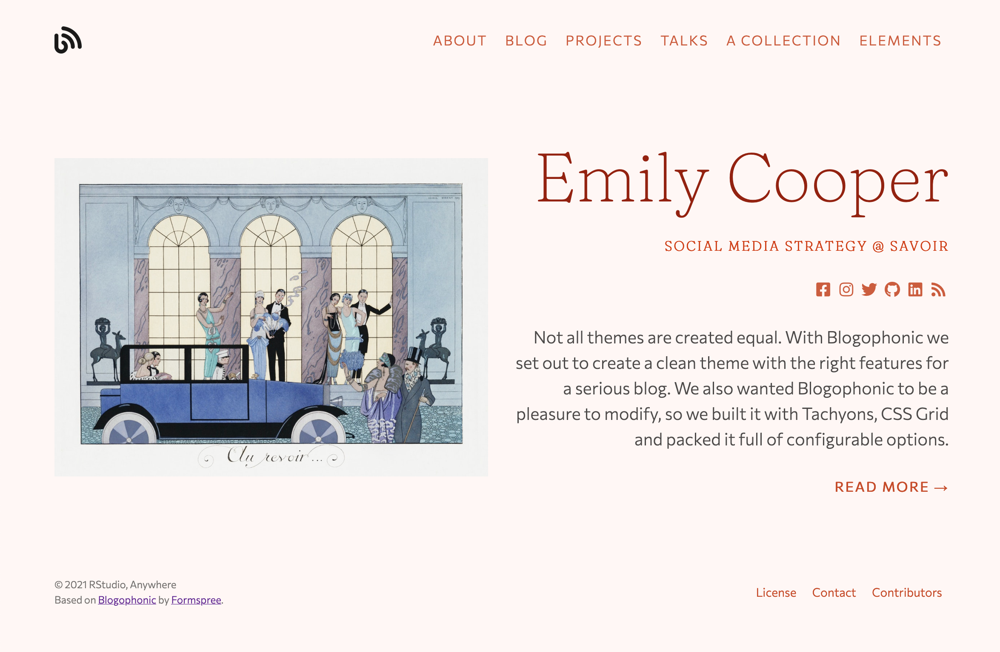

Style your site colors
Use a built-in color theme, or design your own with a Tachyons palette or your own hex codes.
You can totally customize your site’s theme colors within minutes of creating a new site. Read on to find out how, and decide which of the three options meets your needs.
Use a color theme
Hugo Apéro includes 8 built-in color themes that work “out of the box.”
This means you can use a color theme to quickly customize the look of your site
without needing to write any CSS. You can select the color theme in your config.toml file. Scroll down to find:
[params]
<!--snip snip-->
# use a built-in color theme
# one of: forest / grayscale / peach / plum /
# poppy / sky / violet / water
theme = ""
Type one of the options like "peach" inside the quotation marks. If you have a Hugo server started (i.e., by using blogdown::serve_site()), when you save the config.toml file, your site preview will immediately and automatically update with your new color theme. For example, let’s choose "peach"!
[params]
<!--snip snip-->
# use a built-in color theme
# one of: forest / grayscale / peach / plum /
# poppy / sky / violet / water
theme = "peach"
You should see:

If you select a theme that isn’t one of the available options (like "pecan"),
you should see an error message print to your viewer pane in the RStudio IDE:
Selected theme 'pecan' is not one of the options.
All of the color themes were designed to meet WCAG 2.0 level AA requirements for contrast ratios.
Use Tachyons named colors
This theme uses Tachyons, a design system that allows you to design gorgeous interfaces in the browser with little effort.

We’ve leveraged the accessible color combinations included with Tachyons to offer an easy way for you to setup your site using your favorite colors. Here are the steps:
-
Create an
assets/folder in the root of your website project (don’t add it to yourthemes/directory!). -
Create a
.scssfile in the newassets/folder. -
Copy the code below for a full set of color parameters giving you control over the theme color scheme. For an option like
siteBgColor, for example, you can type one of the predefined color names from Tachyons and save the file. Use only color names as shown in the “Color Palette” section of https://tachyons.io/docs/themes/skins/.
// basic color options: use only color names as shown in the
// "Color Palette" section of https://tachyons.io/docs/themes/skins/
$siteBgColor: "near-white" ;
$sidebarBgColor: "light-gray" ;
$textColor: "dark-gray" ;
$sidebarTextColor: "mid-gray" ;
$headlineColor: "dark-pink" ;
$headingColor: "near-black" ;
$bodyLinkColor: "blue" ;
$navLinkColor: "near-black" ;
$sidebarLinkColor: "near-black" ;
$footerTextColor: "silver" ;
$buttonTextColor: "near-white" ;
$buttonBgColor: "black" ;
$buttonHoverTextColor: "white" ;
$buttonHoverBgColor: "blue" ;
$borderColor: "moon-gray" ;
Two last steps- back in your config.toml file:
-
Leave the theme blank (so
theme = ""with empty quotes) in yourconfig.tomlfile. -
Add the name of your theme file (minus the
.scssextension) that you added toassets/as thecustom_theme.
Your final config.toml would look something like this:
[params]
<!--snip snip-->
# use a built-in color theme
# one of: forest / grayscale / peach / plum /
# poppy / sky / violet / water
theme = ""
# or, leave theme empty & make your own palette
# see docs at https://hugo-apero.netlify.app/blog/color-themes/
# the custom scss file must be in the assets/ folder
# add the filename name here, without extension
# to use hex colors instead of named tachyons colors, include "hex" in filename
custom_theme = "named-colors"
Bring your own hex codes
Let’s say you have a style guide to follow and washed-blue just won’t cut the
mustard. There is a bypass of these
predefined colors built in, you just need to do one very special extra step. Follow the steps above for using named Tachyons colors, but then, add hex anywhere in the filename for your custom .scss (for example, you may name this file hex-colors.scss). If you include hex in the filename, you get to assign your own HEX codes, like this:
// set custom hex colors
$siteBgColorCustom: #e3e3da;
$sidebarBgColorCustom: #dbdbd2;
$textColorCustom: #666260;
$sidebarTextColorCustom: #666260;
$headlineColorCustom: #103742;
$headingColorCustom: #103742;
$bodyLinkColorCustom: #c4001a;
$navLinkColorCustom: #c4001a;
$sidebarLinkColorCustom: #c4001a;
$footerTextColorCustom: #918f8d;
$buttonTextColorCustom: #f7f7f4;
$buttonHoverTextColorCustom: #f9f9f8;
$buttonBgColorCustom: #103742;
$buttonHoverBgColorCustom: #c4001a;
$borderColorCustom: #c4beb9;
After adding the name of your theme file (minus the .scss extension) that you added to assets/ as the custom_theme, your final config.toml would look something like this:
[params]
<!--snip snip-->
# use a built-in color theme
# one of: forest / grayscale / peach / plum /
# poppy / sky / violet / water
theme = ""
# or, leave theme empty & make your own palette
# see docs at https://hugo-apero.netlify.app/blog/color-themes/
# the custom scss file must be in the assets/ folder
# add the filename name here, without extension
# to use hex colors instead of named tachyons colors, include "hex" in filename
custom_theme = "hex-colors"